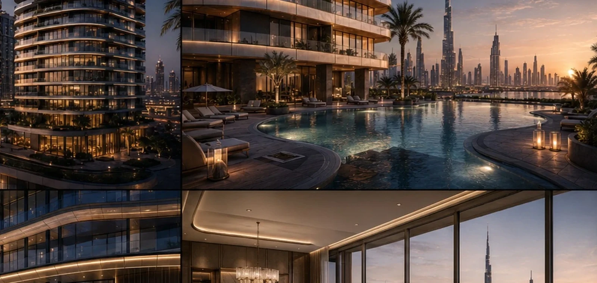
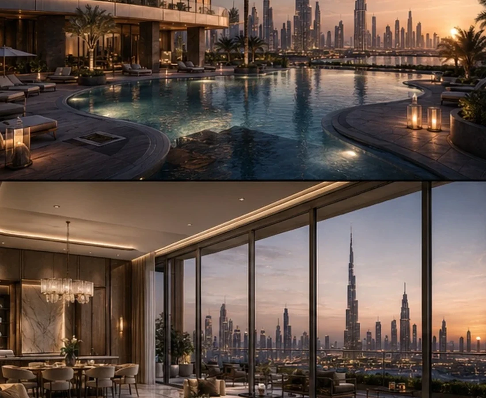
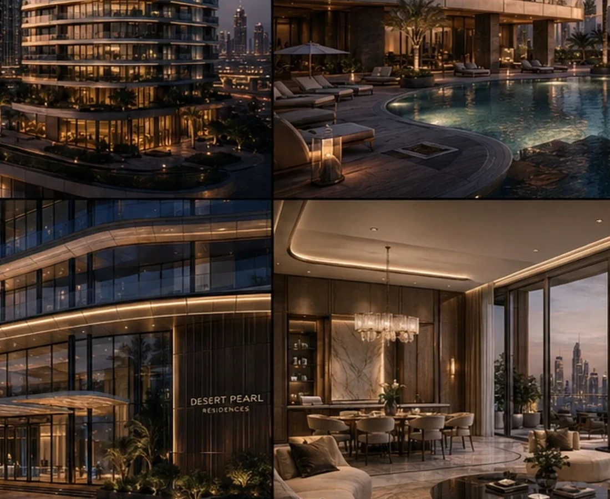

READ THE PROJECT AS A SEQUENCE OF DEVELOPMENT DECISIONS.
The fields below form BADR's standard case-study lens. Project-specific commercial claims should be replaced only when they are supported by the project record.
THE DEVELOPMENT QUESTION
How can a residential tower create both recognisable skyline identity and a more intimate living experience at ground level?
THE GOVERNING IDEA
Pair vertical distinction with landscape, water and hospitality cues.
THE DESIGN RESPONSE
Terraces, articulated massing and amenity-led arrival soften the transition between tower scale and resident experience.
THE SIGNATURE
A strong skyline profile balanced by a more intimate arrival sequence.
WHY IT MATTERS
Market distinction is created at both long-distance perception and everyday resident experience.
Design Direction
A project identity shaped by place, typology and experience.
The composition seeks a balance between iconic skyline presence and a more intimate ground-level experience shaped by landscape, water and hospitality cues.
Project narrative is based on the supplied BADR portfolio record and visible design material.



Design → BIM
The architectural idea continues into coordinated digital delivery.
The supplied BIM portfolio includes this project family.
A New Development Opportunity
Your Site Deserves a Development Strategy Before It Becomes a Drawing Package.